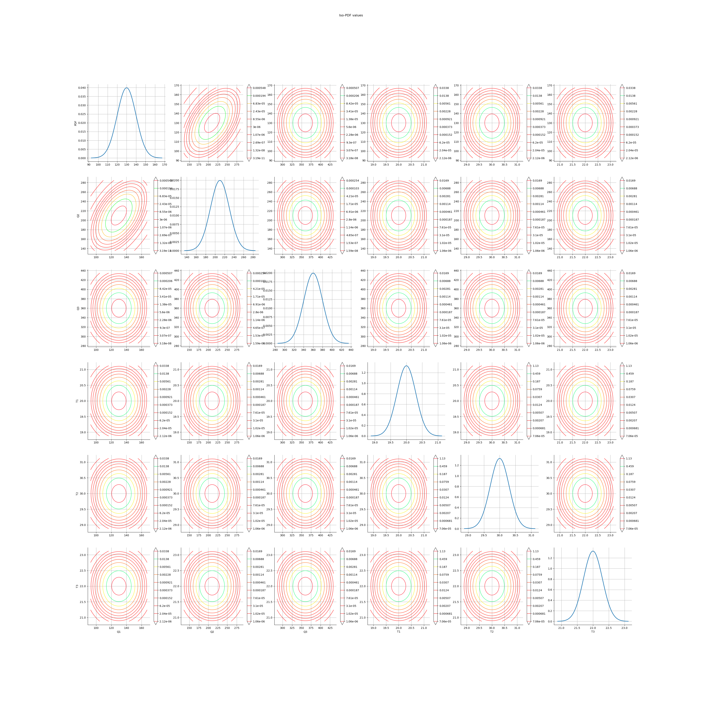
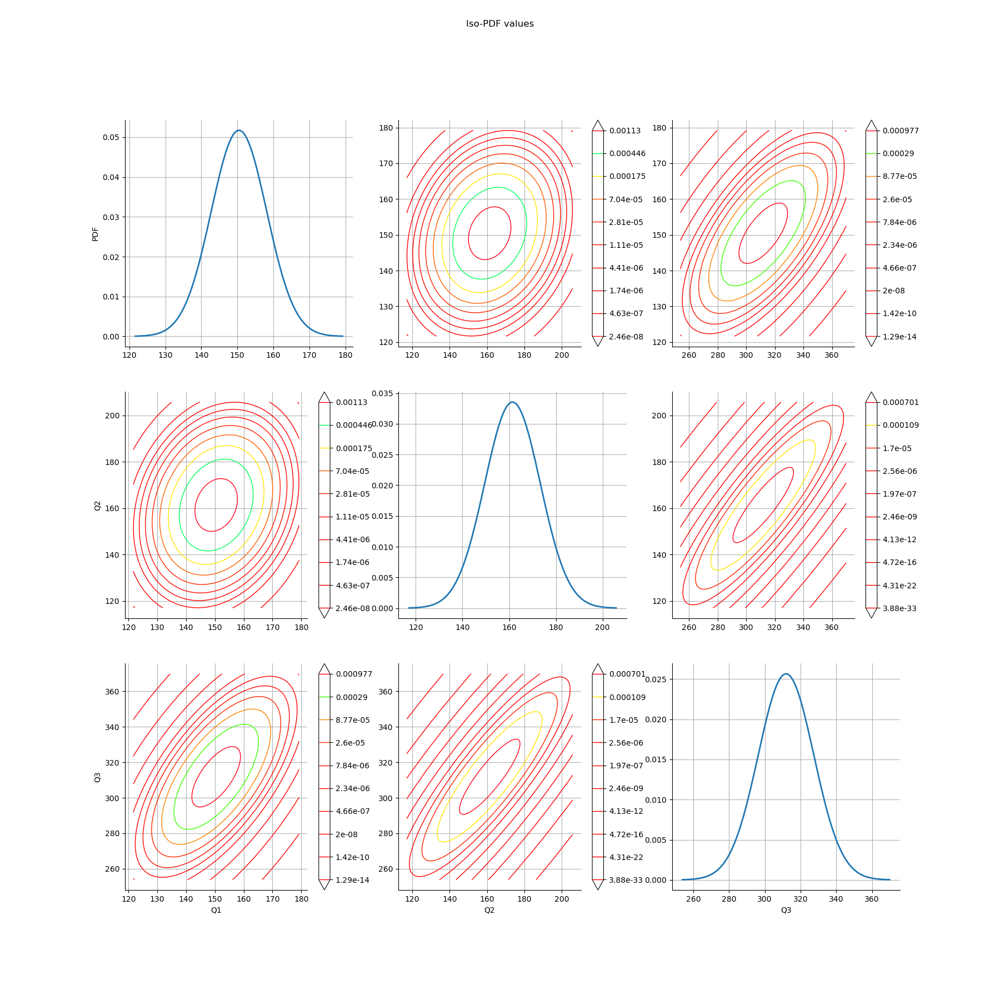
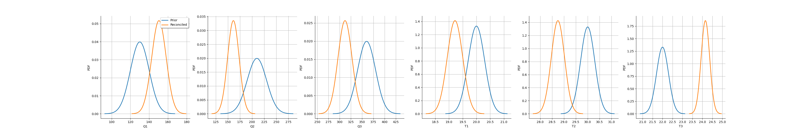

Note
Go to the end to download the full example code.
Reconcile data for the HVAC Splitter¶
- 
- 
- 
6x6
[[ 1 0.5 0 0 0 0 ]
[ 0.5 1 0 0 0 0 ]
[ 0 0 1 0 0 0 ]
[ 0 0 0 1 0 0 ]
[ 0 0 0 0 1 0 ]
[ 0 0 0 0 0 1 ]]
Variable to be Estimated Initial Measured Value Estimated Value Initial Uncertainty Estimated Uncertainty Result of Local Test Local Quality
0 Q1 130 168.0840 19.600 16.619000 False 3.66521
1 Q2 210 143.1060 39.200 23.403100 False 2.12716
2 Q3 360 311.1910 39.200 27.660300 False 1.75720
3 T1 20 19.3590 0.588 0.554325 False 3.26845
4 T2 30 28.9639 0.588 0.563790 False 5.57239
5 T3 22 23.7759 0.588 0.462481 False 4.89078
Q1 Q2 Q3 T1 T2 T3
Sxij
Q1 71.894900 -7.653470 64.241500 0.412516 0.351214 -0.763730
Q2 -7.653470 142.572000 134.918000 -0.893073 -0.760360 1.653430
Q3 64.241500 134.918000 199.160000 -0.480558 -0.409145 0.889703
T1 0.412516 -0.893073 -0.480558 0.079987 -0.008525 0.018539
T2 0.351214 -0.760360 -0.409145 -0.008525 0.082741 0.015784
T3 -0.763730 1.653430 0.889703 0.018539 0.015784 0.055677
Q1 Q2 Q3
Q1 1.000000 -0.075595 0.536866
Q2 -0.075595 1.000000 0.800667
Q3 0.536866 0.800667 1.000000
# # Reconciliation de donnée avec OpenModelica et OpenTURNS
# L'objet est de tester la classe DataReconciliationOM fournissant un wrapper python de la reconciliation de donnée réalisée dans OpenModelica.
# Les résultats de la réconciliation de données sont accessibles au format OpenTURNS (distribution, matrices) pour être visualisés et utilisés dans des études d'incertitudes (propagation, calage par exemple).
# Import des modules nécessaires
import otDataReconciliation as otDataR
import openturns as ot
import openturns.viewer as otv
import matplotlib.pyplot as plt
from IPython.display import Latex, display
from IPython import get_ipython
import os
# Affichage graphiques en ligne si utilisation Ipython
try:
get_ipython().run_line_magic("matplotlib", "inline")
except:
pass
# Le modèle jouet est ici l'exemple d'un gaine de ventilation se séparant
# $$ Q_3 = Q_1 + Q_2 $$
# $$ Q_3 c_p T_3 = Q_1 c_p T_1 + Q_2 c_p T_2 $$
# Les débits sont ici en $m^3.h^{-1}$ et les températures en $degC$
modelName = "TestDataR_HVACSplitter"
# Construction de la loi à priori des mesures à réconciliées
# Une corrélation de 0.5 est spécifiée entre $Q_1$ et $Q_2$
# Dans le cadre de la réconciliation de donnée mis en oeuvre dans OpenModelica, la loi à priori doit être une loi normale multivariée.
VarNames = ot.Description(["Q1", "Q2", "Q3", "T1", "T2", "T3"])
priorMeasurements = ot.Point([130, 210, 360, 20, 30, 22])
priorMeasurementsStandardDeviation = ot.Point([10, 20, 20, 0.3, 0.3, 0.3])
correlationMatrix = ot.CorrelationMatrix(
len(VarNames)
) # Initialisé à la matrice identité
correlationMatrix[0, 1] = 0.5 # Spécification du coefficient de corrélation souhaité
priorDistribution = ot.Normal(
priorMeasurements, priorMeasurementsStandardDeviation, correlationMatrix
)
# La matrice étant symmétrique, le coefficient [1,0] est automatiquement mis à jour
display(correlationMatrix)
# Construction de la classe réconciliation de données
casePath = "./"
simuMatPath = "SIMU_MAT_0"
covarianceMatrix = priorDistribution.getCovariance()
dataR = otDataR.DataReconciliationOM(
modelName, VarNames, priorMeasurements, covarianceMatrix, casePath, simuMatPath
)
# Visualisation de la distribution multivariée des mesures avant réconciliation
priorDistribution = dataR.getPriorDistribution()
grid = priorDistribution.drawDistributionGridPDF()
fig = otv.View(grid)
# Lancer la réconciliation de données
dataR.reconcileData()
# # Analyse des résultats
df = dataR.getLocalResultsAsDataFrame()
display(df)
# Visualisation de la distribution multivariée des mesures réconciliées, marginales 1D et 2D (visualisation de la dépendance à posteriori)
posteriorDistribution = dataR.getPosteriorDistribution(index=[0, 1, 2])
grid = posteriorDistribution.drawDistributionGridPDF()
fig = otv.View(grid)
# Il est également possible de récupérer la matrice de covariance à posteriori
posteriorCovM = dataR.getCovarianceMatrixAsDataFrame()
display(posteriorCovM)
# Accès à la matrice de corrélation reconciliée des trois débits
posteriorCorrelationMatrix = dataR.getPosteriorCorrelationMatrix(index=[0, 1, 2])
posteriorCorrelationMatrixDF = dataR.getPosteriorCorrelationMatrixAsDataFrame(
index=[0, 1, 2]
)
display(posteriorCorrelationMatrixDF)
# Visualisation de l'effet de la réconciliation de données sur les marginales
grid = dataR.drawPriorPosteriorMarginalsDistribution()
fig = otv.View(grid)
Total running time of the script: (0 minutes 3.192 seconds)